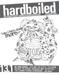

<div class="sidebar" id="issues">

<!--pagename, work in progress

<div class="pagename" id="issues">
archived issues
</div>

-->


<br>
<h2><span class="isnumber">issue 13.1</span><br>
<span class="isdate">October 2009</span></h2>

<h3>Want to read the original <a href="131.pdf">pdf?</a></h3>

table of contents<br><br>
<ul>
<li><a href="index.html"><span class="article">editor's note</span><br></a>
<span class="author">by cecilia tran</span></li>
<br>

<li><a href="131-3-takaki.html"><span class="article">the road ahead</span><br></a>
<span class="author">by annie kim noguchi</span></li>
<br>

<li><a href="131-4-languages.html"><span class="article">to learn or not to learn</span><br></a>
<span class="author">by justin ko</span></li>
<br>

<li><a href="131-5-beats.html"><span class="article">breathing bold and beautiful beats</span><br></a>
<span class="author">by sherry gong</span></li>
<br>

<li><a href="131-5-food.html"><span class="article">comfort foods that take you back home</span><br></a>
<span class="author">by rachel lee</span></li>
<br>

<li><a href="131-6-china.html"><span class="article">my china is gray</span><br></a>
<span class="author">by jasmine wang</span></li>
<br>

<li><a href="131-7-cuts.html"><span class="article">feeling the cuts</span><br></a>
<span class="author">by denise wong</span></li>
<br>

<li><a href="131-8-not-accepted.html"><span class="article">apology not accepted</span><br></a>
<span class="author">by michell ho</span></li>
<br>

<li><a href="131-9-asian-american.html"><span class="article">when asian american doesn't mean asian american</span><br></a>
<span class="author">by casey tran</span></li>
<br>

<li><a href="131-10-sororities.html"><span class="article">sister, sister</span><br></a>
<span class="author">by kenny gong and sunny kim</span></li>
<br>

<li><a href="131-10-mcdonalds.html"><span class="article">japan is lovin' Mr. ?????</span><br></a>
<span class="author">by eileen tse</span></li>
<br>

<li><a href="131-11-breaking.html"><span class="article">breaking through</span><br></a>
<span class="author">by cher kristina padua</span></li>
<br>

<li><a href="131-11-imitation.html"><span class="article">is imitation really the sincerest form of flattery?</span><br></a>
<span class="author">by kim filipinas</span></li>
<br>

<li><a href="131-12-syndrome.html"><span class="article">the connie chung syndrome</span><br></a>
<span class="author">by ivonne ho</span></li>
<br>

<li><a href="131-12-filipino.html"><span class="article">how i am celebrating pilipino american history month</span><br></a>
<span class="author">by carlo de la cruz</span></li>
<br>

</ul>
</div>
